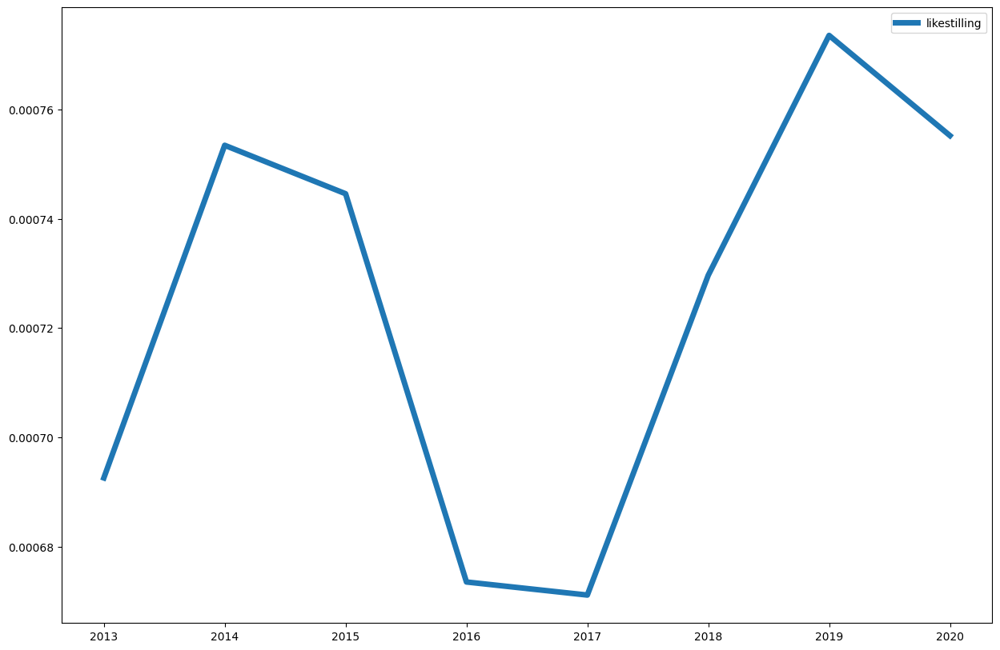

1.7. Søk i aviser#
Aviser skiller seg litt fra bøker ved at de utkommer daglig, sånn at datoer er en viktig del i konkordanser og kollokasjoner.
import dhlab.nbtext as nb
import dhlab as dh
from dhlab import Corpus, totals, Collocations, NgramNews, Ngram
1.7.1. Referansedata#
frekvenslisten for de 50000 meste frekvente i Bokhylla bøker.
tot = totals(50000)
tot.head(5)
| freq | |
|---|---|
| . | 7655423257 |
| , | 5052171514 |
| i | 2531262027 |
| og | 2520268056 |
| - | 1314451583 |
1.7.2. Bygge korpus fra aviser#
korpus = Corpus(doctype="digavis", title="aftenposten", from_timestamp="19940101", to_timestamp="19940301", limit=20)
1.7.3. Konkordanser#
korpus.conc(words="langrenn").show()
| link | concordance | |
|---|---|---|
| 29 | URN:NBN:no-nb_digavis_aftenposten_null_null_19940125_135_40_1 | ... _____-_______ ilclsg Langrenn : IL Jutul arr Lysløypesprinten på Jordbru ved Skui i Bærum kl. 18 30 Trav : Drammen... |
| 3 | URN:NBN:no-nb_digavis_aftenposten_null_null_19940209_135_66_1 | Store deler av verdenseliten i langrenn , deriblant Vegard Ulvang , kan bli rammet av et eventuelt forbud mot ytterligere... |
| 84 | URN:NBN:no-nb_digavis_aftenposten_null_null_19940222_135_88_1 | ... Verre råkjør har knapt noen sett i langrenn . Da svensken satte inn « turboen » , virket det som om finnen... |
| 93 | URN:NBN:no-nb_digavis_aftenposten_null_null_19940209_135_66_1 | ... I Norge har dere mange vinteridretter ungdommen kan velge mellom , langrenn , hopp , alpint , ishockey , i... |
| 75 | URN:NBN:no-nb_digavis_aftenposten_null_null_19940110_135_14_1 | ... Nordisk cup Tammerfors , Finland langrenn I helgen : Sendag : Menn , 15 km : 1 ) Øyvind Skaanes... |
| 109 | URN:NBN:no-nb_digavis_aftenposten_null_null_19940110_135_14_1 | ... januar 1994 langrenn og kombinert Husk Holmenkollsøndagen 13. mars 1994 ! ( f ) SKIFORENINGEN itødipoflcil . Tlf 22 92... |
| 54 | URN:NBN:no-nb_digavis_aftenposten_null_null_19940207_135_62_1 | ... Langrenn 30 km kv / komb . lag . 25.2 8 stk. Hopp 90 m . 27.2 5 stk. Langrenn... |
| 7 | URN:NBN:no-nb_digavis_aftenposten_null_null_19940130_135_49_1 | ... Chr . Finstad , Norge ( lo-5 ) . Langrenn 1 0 km hi teknikk , gutter 1 8 in... |
| 45 | URN:NBN:no-nb_digavis_aftenposten_null_null_19940217_135_80_1 | ... bameprogram . 10.15 - 13.30 : OS Lillehammer . Langrenn : 10 km , jaktstart , menn og kvinner .... |
| 92 | URN:NBN:no-nb_digavis_aftenposten_null_null_19940204_135_59_2 | ... De klassiske vintergrenene som hopp , langrenn og skøyter , er forbeholdt barn . De voksne kan spille curling med... |
1.7.4. Kollokasjon#
coll = korpus.coll("langrenn").frame.sort_values(by="counts", ascending=False)
coll
| counts | |
|---|---|
| , | 127 |
| . | 116 |
| og | 44 |
| i | 37 |
| km | 35 |
| ... | ... |
| vintergrenene | 1 |
| vinteridretter | 1 |
| vintersporten | 1 |
| virket | 1 |
| vlderekommende | 1 |
679 rows × 1 columns
1.7.5. Sammenligne med referanse#
(coll.counts / tot.freq).sort_values(ascending = False).head(20)
hockey 0.000025
13.2 0.000015
Kunstløp 0.000014
Holmenkollen 0.000014
x5 0.000013
bill. 0.000011
alpint 0.000010
15.2 0.000009
14.2 0.000008
slor 0.000008
sosialdemokratisk 0.000008
ishockey 0.000008
bill 0.000008
OL-gull 0.000008
Verdenscup 0.000008
Sapporo 0.000008
199. 0.000008
svenskenes 0.000007
Birkebeineren 0.000007
tV 0.000007
dtype: float64
1.7.6. Ngram#
Ngram(words=["likestilling"], doctype="digavis", from_year=2010, to_year=2020).plot(lw = 5)

at = NgramNews(
words=["likestilling"],
title="aftenposten",
from_year=1980,
to_year=2000
)
bt = NgramNews(
words=["likestilling"],
title="bergenstidende",
from_year=1980,
to_year=2000
)
(at.ngram / bt.ngram).plot(lw=5)
<Axes: >
Tilbake til DHLAB ved Nasjonalbiblioteket